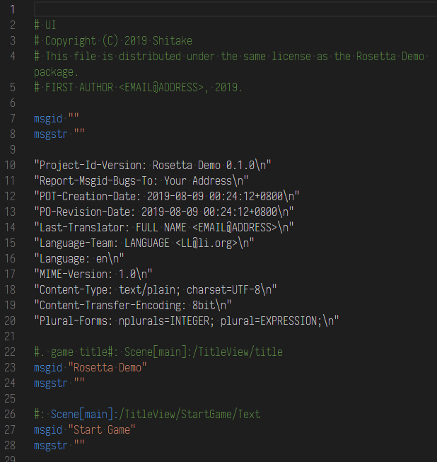
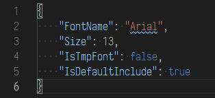

翻译文件模板
Rosetta 的翻译模板文件是以 Creator 为单位进行生成的。不同的 Creator 生成不同结构的文件。
需要注意的是，目前对于图片和音频只支持有限的格式（png/wav）。你可以通过实现其他个格式的 Loader 来支持你需要的格式，这样做完 I18N 处理的文件就可以保存为你需要的格式了。
PotCreator
PotCreator 负责生成 GNU GetText 的标准翻译模板文件 .pot 文件。

需要注意的是，在 gettext 里 pot/po 文件的文件名用来区分对应的是哪一个语言。而在 Rosetta 中则完全不同。因为 Rosetta 需要分段加载的缘故。不同语言使用不同的文件夹来区分。而 pot/po 文件的文件名则用来区分他是哪一个域（space）。
MediaCreator
MediaCreator 负责生成音频/图片/字体的 I18N 翻译模板文件。
I18NTempate
├─res
│ ├─audio
│ │ └─<space name>
│ │ └─<i18n audio files>
│ ├─font
│ │ └─<space name>
│ │ └─<i18n audio files>
│ └─img
│ └─<space name>
│ └─<i18n audio files>
└─<space name>
└─mediaInfo.json
Rosetta 的翻译文件依据 space 来划分。所有的多媒体资源则统一放在 res 文件夹下对应类型的子文件夹内。同时 MediaCreator 会创建一个名为 mediaInfo.json 的文件，用来记录对应
space 下包含那些多媒体资源。
对于多媒体资源文件的 I18N 工作，下边会根据文件类型来逐一说明。
img
对于图片资源，会在 I18NTemplate/res/img/<space name>/ 下生成一个格式为 png I18N 图片的拷贝以及同名的 json 文件。在进行 I18N 工作时，只需要依照图片拷贝提供相同格式的相同大小的
I18N
后的图片文件。 json 文件不需要做任何变动。
注：如果一个图片文件原本为一个 multiple sprite 上的一个 sprite。生成拷贝时只会复制其对应的部分，而不会复制整个 multiple sprite 所对应的 texture。顺便，对应的 json 文件里记录了相关的位置和大小信息。
Audio
对于音频资源，会在 I18NTemplate/res/img/<space name>/ 生成一个对应的音频文件拷贝。需要注意的是，虽然拷贝的格式会和原文件保持一致。但是做完 I18N 处理后需要提供 wav
格式的文件，这是因为目前 Rosetta 只支持对 wav 的加载。
font
对于字体资源，会在 I18NTemplate/res/font/<space name>/ 生成一个名为 <virtual font name>.json 的文件。

该文件记录了你的 I18N 字体资源的导入情况。你需要根据需要来重新天写该文件。
FontName 项记录了实际字体资源的名字。Rosetta 会根据这个名字在运行时查找并载入。
Size 决定了字体在载入时设定的大小。该值仅在字体是从操作系统读取时有效。其效果和 Font ImportSettings 里的 Font Size 项类似。
IsTmpFont该项指明该资源是否为一个 TMPFont 资源。需要注意的时，TMPFont 无法从外部加载。
IsDefaultInclude 该项决定了字体资源具体从哪里加载。当为 true 时，这意味着你的游戏打包时就已经将字体文件打包在内了（在 unity Resources
文件夹内），否则将从操作系统字体文件夹内直接读入（参考）。